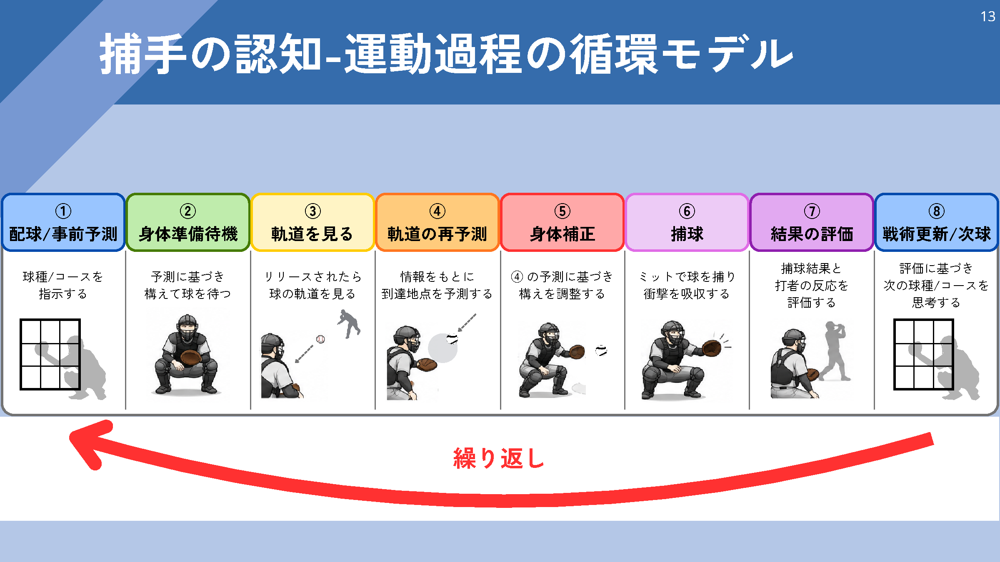
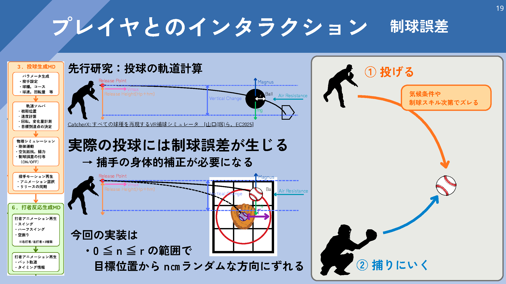

体験者が行うこと
- 球種とコースを決める
- 捕球位置を予測して構える
- 球を見てミットを動かす
- 結果を見て次の配球を考える
- 拡張版では持ち替えて塁へ投げる
WHAT IS CATCHERX?
CatcherXは，野球の捕手が一球ごとに行う判断と身体動作を体験するVRシステムです． 体験者はホームベース後方の捕手位置に入り，配球を選び，ミットを構え，飛来する球を捕ります． 現在の拡張版では，捕球後に持ち替えて塁へ送球し，走者の進塁阻止まで体験できます．
一球の流れを見るIN SHORT
体験の中心は，正解を眺めることではなく，自分で選び，身体を動かし，結果を受け取ることにあります．
EC2026特選セッション ティザームービー YouTubeで見る ↗
ONE PITCH EXPERIENCE
配球を選ぶところから，捕球後の結果を次の判断へ戻すところまでを一つの循環として扱います．
球種とコースを選び，投手へ要求する．
選んだ球が来ると考えた位置へミットを出す．
投手が投げ，球速・変化・制球のズレを含む軌道が現れる．
構えから外れた球にも反応し，左手を動かして捕球する．
捕れたか，打者がどう反応したかを受け取る．
直前の結果を材料に，次の球種とコースを決める．

MOVE TO THE BALL
投球は指定したコースへ常に正確に届くわけではありません．体験者は実際の軌道を見て到着位置を捉え直し，構えた位置からミットを動かします．

TWO RESEARCH STAGES
EC2026では配球から捕球・次球判断までを扱い，WISS 2026では捕球後のフィールドプレイを追加しました．
捕手の認知-運動過程を，一球ごとに循環する体験として実装した段階です．
一球の後半を，捕手・走者・内野手が関わるフィールドプレイへ広げた段階です．
AFTER THE CATCH
捕球後，右手へ持ち替え，走者の進塁先を判断して送球します．自動で成功するのではなく，動作の方向や速度に応じたズレが結果へ残ります．
投球と同時に盗塁などの進塁が始まる．
左手のミットから右手へボールを移す．
二塁・三塁など，守るべき塁を見て送球する．
タッチ完了と走者到達の早い方で判定する．
WHY THIS EXPERIENCE?
CatcherXは，捕手の判断から捕球・送球までを一続きで再現すると同時に，どのように考え，どの方向へ身体を動かしたかを記録・分析できるVRシミュレータです．
打者の後ろから投球を受け，配球と捕球を同じ立場で経験する．
何を選んだかと，実際にどう動いたかを一つの試行として扱う．
球速やコースなどを設定し，体験者や条件による違いを記録する．